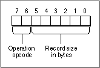
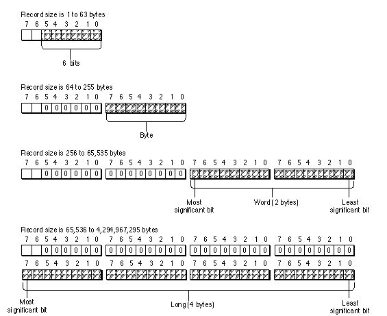

Operation Opcode Byte
The first byte of a header or object is always an operation opcode byte. The operation opcode byte contains both an operation opcode and the size in bytes of the record that follows for the current object. The operation opcode either defines a new object, adds data to the current default object, or references a previous object. The record length in bytes includes the data type opcode byte and any data that may follow for the current object. Figure 7-3 shows the format of the operation opcode byte.Figure 7-3 The format of the operation opcode byte

The operation opcode and record size are always in the same stream format. This enables a reader of the data stream to skip over parts of the data stream that are not understood.
Operation Opcode
Bits 6 and 7 of the operation opcode byte are the operation opcode. Table 7-1 summarizes the 2-bit operation opcodes from thegxGraphicsOperationOpcodeenumeration.Record Size
The record size defines the number of bytes required to define the header or object record, not including the operation opcode byte. It is always 1 or larger. The record size is given in either bits 0 through 5 of the operation opcode byte or within the bytes that follow the operations opcode byte.If the record size is larger than the value that can be represented in bits 0 through 5, larger than 63, then a 0 appears in these 6 bits and the next byte in the data stream may contain the record size.
If the record size is larger than the value that can be represented in the next byte, larger than 255, then a 0 appears in this byte and the next word in the stream may contain the record size.
If the record size is larger than the value that can be represented in the next word, larger than 65,535, then a 0 appears in this word and the next long in the stream contains the record size. A long can accommodate a record size up to 4,294,967,295 bytes.
Figure 7-4 shows the operation opcode byte on the left and the subsequent bytes in which the record size is stored in 6-bits, a byte, a
word, or along. The data stream continues proceeds from left to right.Figure 7-4 Data format of the record size

An example of a bit stream in which a long was required to accommodate a record size of 404 bytes is described in the section "Analyzing a Flattened Bitmap Shape" beginning on page 7-81.